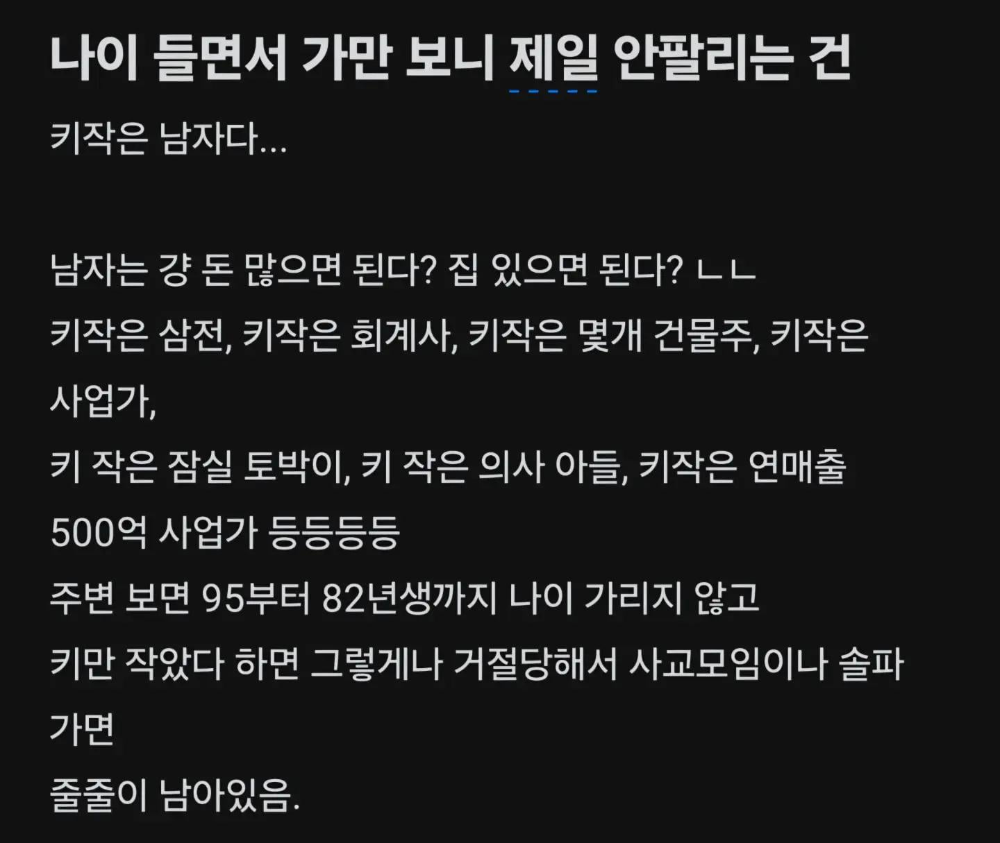
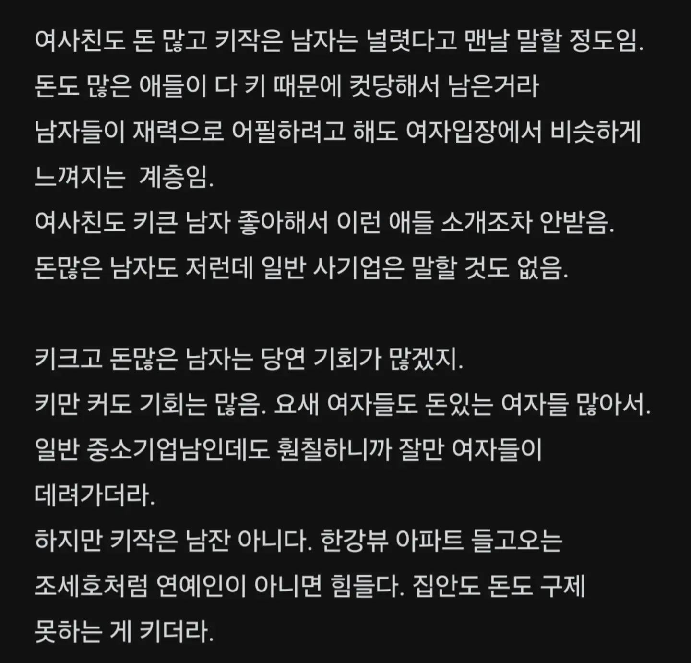
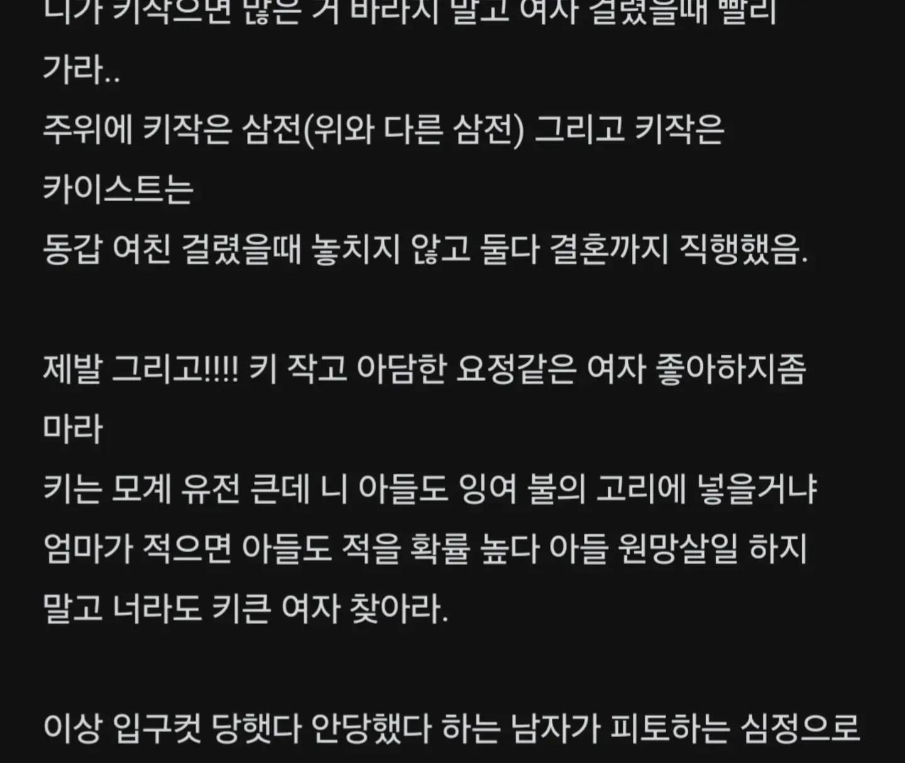

저 위에도 있음
자주 가는 정형외과 원장님 키 158인데 여지껏 솔로임 직업으로 찍어 누르는 것도 옛말임.. 진짜 작으면 쉽지 않음
158은 수술 해야지.. 여자보다도 작은데
키 존나 작고 못난 나도 소개팅 한 번 없이 결혼하고 잘 사는데 이런 글 보면 참 기분이 복잡하다
주변에 키작은 친구들 많은데 다 잘 사귀고 결혼함.
-키 168? 현차사무직 결혼
-키 165? 시중은행 결혼
-키 168? 공먼 10살연하랑 연애
친구지만 다들 매력좋고 주변에 사람많다는 공통점이잇네
키 작은 남자는 일종의 고블린 취급인건가
가마분타 소환술!!
아냐.. 키 작아도 결혼해서 잘 사는 사람도 많음
169인데 연애엔 딱히 문제는 없었는데
179 정도만 됐어도 솔찍히 방탕하게 살 수 있었을것 같음
여자들이 말을 안하는데
키작남=예비데이트폭행범
이런식으로 인식함
당연히 키작남들이 지향해야 할 예외이긴 하지만
어디까지나 예외고 결국 불쌍한 건 매한가지 아녀ㅜ